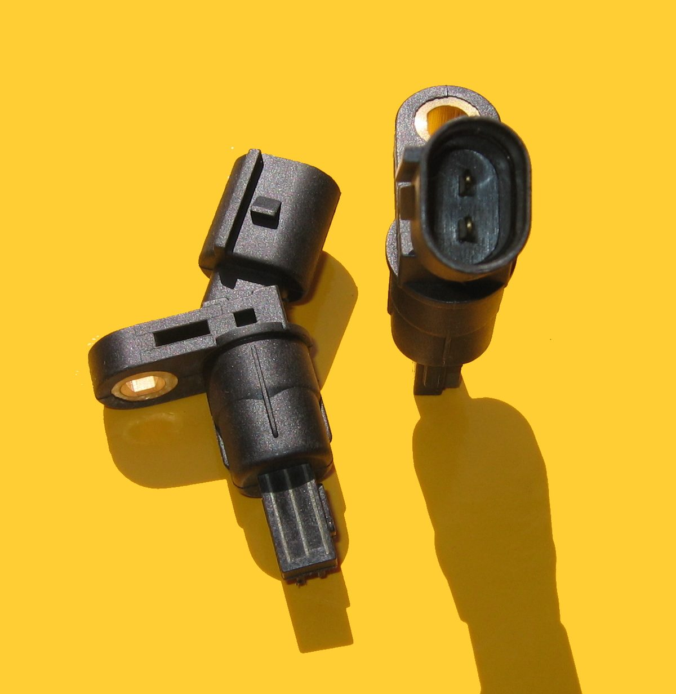

Poradňa autoservisu autoZ
Svieti kontrolka ABS
Oranžová kontrolka s nápisom ABS znamená, že protiblokovací systém bŕzd zistil chybu a vypol sa. Brzdy zvyčajne fungujú ďalej, ale pri prudkom brzdení sa môžu kolesá zablokovať.


Môžem jazdiť?
Zastavte a ďalej nejazdite. Pri niektorých autách to znamená, že nefunguje ani rozdeľovanie brzdnej sily medzi prednú a zadnú nápravu a pri brzdení sa môžu zablokovať zadné kolesá. Auto nechajte odtiahnuť.
Opatrne môžete dôjsť do servisu. Počítajte s tým, že pri prudkom brzdení sa kolesá môžu zablokovať a auto sa nedá riadiť. Väčšinou nefungujú ani stabilizačný systém ESP a protišmykový systém. Jazdite pomaly, s väčším odstupom a nečakajte s tým dlho – najmä na mokrej alebo zľadovatenej ceste.
Čo ABS robí a čo kontrolka znamená
ABS (protiblokovací systém) pri prudkom brzdení zabraňuje zablokovaniu kolies, aby sa auto dalo počas brzdenia riadiť. Riadiaca jednotka ABS sleduje otáčky každého kolesa cez snímače otáčok. Keď niektoré koleso začne blokovať, krátko uvoľní brzdný tlak na tomto kolese.
Keď jednotka zistí chybu – napríklad nedostane signál zo snímača – ABS sa vypne a rozsvieti sa kontrolka. Bežné brzdy (pedál, čerpadlo, strmene, platničky) pritom fungujú ďalej. Chýba však ochrana proti zablokovaniu kolies.
Na ABS sú zvyčajne naviazané aj ďalšie systémy – stabilizácia ESP a protišmykový systém – preto často svietia ich kontrolky spolu s ABS.
Pri zapnutí zapaľovania sa kontrolka ABS rozsvieti v rámci testu a po naštartovaní, prípadne po rozbehnutí, má zhasnúť.
Najčastejšie príčiny
| Príčina | Čo si môžete všimnúť | Poznámka |
|---|---|---|
| Snímač otáčok kolesa | kontrolka sa rozsvieti počas jazdy, niekedy až po rozbehnutí | najčastejšia príčina, chyba ukáže, ktoré koleso |
| Poškodený kábel alebo konektor snímača | kontrolka svieti občas, napríklad na nerovnostiach | kábel pri kolese býva vystavený vode a soli |
| Snímací krúžok (impulzný krúžok) – často súčasť ložiska | kontrolka po výmene ložiska alebo pri opotrebovanom ložisku | pri niektorých autách sa mení s ložiskom |
| Nízke napätie batérie | kontrolka po štarte so slabou batériou, viac kontroliek naraz | najprv overiť batériu a nabíjanie |
| Poistka alebo riadiaca jednotka ABS | kontrolka svieti stále, ABS nereaguje | overuje sa diagnostikou |
| Nízka hladina brzdovej kvapaliny | svieti aj červená kontrolka bŕzd | nejazdiť, pozri kontrolka bŕzd |
Prehľad je orientačný. Konkrétne koleso a príčinu ukáže chybový kód z diagnostiky.
Čo urobiť, keď svieti kontrolka ABS
- Všímajte si, či svieti aj červená kontrolka bŕzd alebo kontrolky ESP. Pri červenej kontrolke bŕzd zastavte.
- Na bezpečnom mieste vyskúšajte, či brzdový pedál nie je mäkký a či auto brzdí rovno.
- Skontrolujte hladinu brzdovej kvapaliny v nádobke pod kapotou.
- Ak brzdy fungujú normálne, jazdite opatrne, s väčším odstupom a dôjdite do servisu.
- Dajte prečítať chybový kód – ukáže, ktorý snímač alebo ktoré koleso je príčinou.
Prečo nestačí chybu vymazať
Ak je príčinou poškodený kábel, nečistota na snímači alebo opotrebované ložisko, chyba sa po vymazaní vráti. ABS je bezpečnostný systém, preto je rozumné opraviť príčinu a overiť funkciu po oprave.
Pri kontrole bŕzd sa oplatí pozrieť aj stav platničiek a kotúčov. Súvisiace: kontrolka bŕzd. Všetky kontrolky podľa farby nájdete na hlavnej stránke svietikontrolka.sk.
Časté otázky
Môžem jazdiť, keď svieti kontrolka ABS?
Ak svieti len kontrolka ABS a brzdy fungujú normálne, môžete opatrne dôjsť do servisu. Pri prudkom brzdení sa však kolesá môžu zablokovať. Ak svieti aj červená kontrolka bŕzd alebo je pedál mäkký, zastavte a ďalej nejazdite.
Fungujú brzdy, keď svieti kontrolka ABS?
Zvyčajne áno, auto brzdí ako bez ABS. Chýba ochrana proti zablokovaniu kolies a väčšinou aj stabilizačný systém ESP.
Čo je najčastejšia príčina kontrolky ABS?
Najčastejšie chybný snímač otáčok kolesa alebo poškodený kábel k nemu. Diagnostika ukáže, ktoré koleso je príčinou.
Prečo svieti ABS aj ESP naraz?
Stabilizačný systém ESP používa rovnaké snímače otáčok kolies ako ABS. Keď je chyba v ABS, vypne sa zvyčajne aj ESP.
Kde v Trenčíne opravia ABS?
V autoservise autoZ na ulici gen. M. R. Štefánika 6670/19 v Trenčíne, pri Kauflande. Objednať sa môžete na 0910 606 999 alebo na autoz.sk/rezervacia.
Svieti vám kontrolka ABS? Nájdeme chybný snímač.
Diagnostiku ABS a opravy bŕzd robíme v autoservise autoZ v Trenčíne. Zavolajte, pošlite fotku palubnej dosky na WhatsApp alebo sa objednajte online.
autoZ – autoservis Zelman · gen. M. R. Štefánika 6670/19, 911 01 Trenčín (pri Kauflande) · Po–Pi 8:00–16:30 · Brzdy Trenčín · Diagnostika auta Trenčín
← Všetky kontrolky